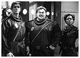
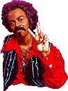
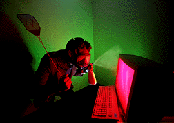

|  |
Rocket Revengers
- What the...!?! Rocket Revengers are ready to rocket! Right?
|
Coffee Guy
- What Java blend is keeping Stan up this week? Sunny Sumatra, Killer Kenyan, or Malaysian Moods?
|
Trina
- Meet the sad barren receptionist who works in a OB/GYN office and colors her life with Haaaaaallllmark cards and Precious Moments figurines.
|
 |
Desperation Lee
- His hot one-liners are ass tinglers that will make you want to open up that garage door and park your Probe. |
 |
neoh -- The hacker!
- The dood who takes advantage of weak security and posts his pic on his favorite shows characters page! Maybe if your lucky, you'll see him again, or perhaps in a future episode! But until then, remember to fear him in everything he does! |